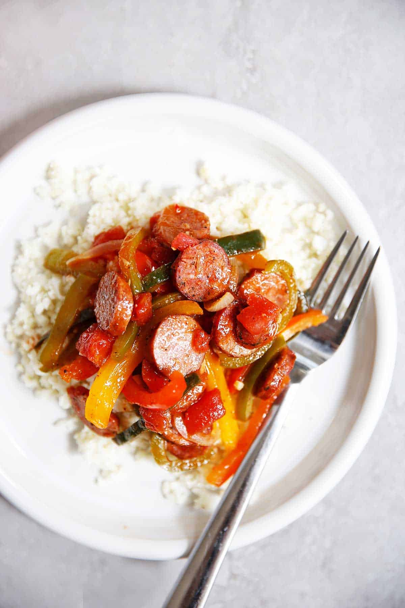

Kielbasa and Rice

Description
Sautéed kielbasa, peppers, and onions with rice is a hearty and flavorful dish that's perfect for a quick weeknight meal. This recipe combines smoky kielbasa with vibrant bell peppers and sweet onions, all sautéed to perfection and served over a bed of fluffy rice. The combination of savory and slightly spicy flavors from the kielbasa with the freshness of the vegetables makes for a satisfying and balanced meal. Whether you're looking for a simple dinner idea or a tasty meal prep option, this dish is sure to please.
Ingredients
- 1 lb kielbasa, sliced
- 1 red bell pepper, sliced
- 1 green bell pepper, sliced
- 1 yellow bell pepper, sliced
- 1 large onion, sliced
- 2 cloves garlic, minced
- 2 tablespoons olive oil
- Salt and pepper to taste
- 1 teaspoon smoked paprika
- 1/2 teaspoon dried oregano
- 1/2 teaspoon dried thyme
- 2 cups cooked rice
Steps
- Heat the olive oil in a large skillet over medium heat.
- Add the sliced kielbasa to the skillet and cook until browned on both sides, about 5-7 minutes.
- Remove the kielbasa from the skillet and set aside.
- In the same skillet, add the sliced bell peppers and onions. Sauté until they start to soften, about 5 minutes.
- Add the minced garlic and cook for an additional 1-2 minutes until fragrant.
- Return the kielbasa to the skillet and stir to combine with the vegetables.
- Season with salt, pepper, smoked paprika, dried oregano, and dried thyme.
- Continue to cook for another 3-5 minutes, allowing the flavors to meld together.
- Serve the sautéed kielbasa, peppers, and onions over a bed of cooked rice.